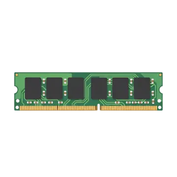

display: block
Elementos em bloco ocupam a largura disponível e começam em uma nova linha.
Bloco 1
Bloco 2
Bloco 3
Mesmo com pouco texto, cada bloco força a próxima caixa a descer.
Praticando Box Model e Display com CSS
Cada componente abaixo está dentro de uma caixa. Essa caixa possui conteúdo, espaçamento interno, borda e espaçamento externo.
Esta página demonstra como os elementos HTML se comportam visualmente quando recebem estilos em CSS. Cada componente do catálogo funciona como uma caixa: dentro dela existe o conteúdo, ao redor do conteúdo existe o espaçamento interno, depois vem a borda e, por fora, o espaçamento que separa uma caixa da outra.
Além do tamanho e dos espaços, a página também mostra como a propriedade display interfere na organização dos elementos. Alguns ocupam uma linha inteira, outros ficam na mesma linha do texto, e outros conseguem ficar lado a lado mantendo largura, altura, margem e preenchimento.
Nos cards do catálogo, a imagem e o texto são o conteúdo. O padding cria respiro interno, a borda roxa delimita a caixa e a margin afasta um card do outro.
A seção final compara elementos block, inline e inline-block para mostrar como cada tipo ocupa espaço e se posiciona dentro da página.

Responsável por executar instruções e processar dados.
CPU
Armazena temporariamente os dados utilizados pelo sistema.
Memória
Responsável pelo processamento gráfico do computador.
GPUA propriedade display define como cada elemento ocupa espaço na página. Compare os exemplos abaixo e observe se os elementos ficam um abaixo do outro, lado a lado ou com tamanho controlado.
display: blockElementos em bloco ocupam a largura disponível e começam em uma nova linha.
Bloco 1
Bloco 2
Bloco 3
Mesmo com pouco texto, cada bloco força a próxima caixa a descer.
display: inlineElementos inline ocupam apenas o espaço do próprio conteúdo e continuam na mesma linha.
Eles se comportam como palavras dentro de uma frase.
display: inline-blockElementos inline-block ficam lado a lado, mas aceitam largura, altura, margin e padding.
É o comportamento usado nos cards do catálogo de componentes.